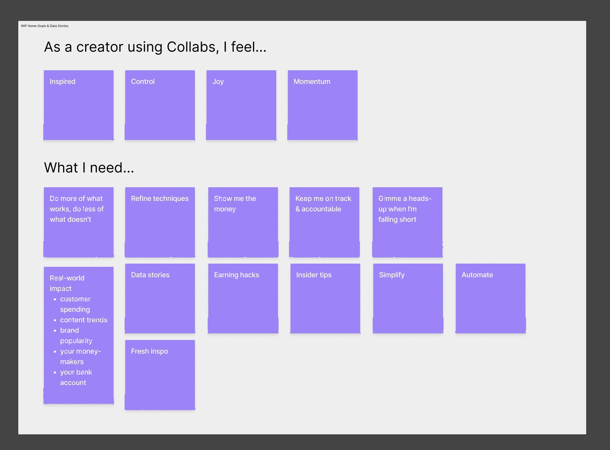
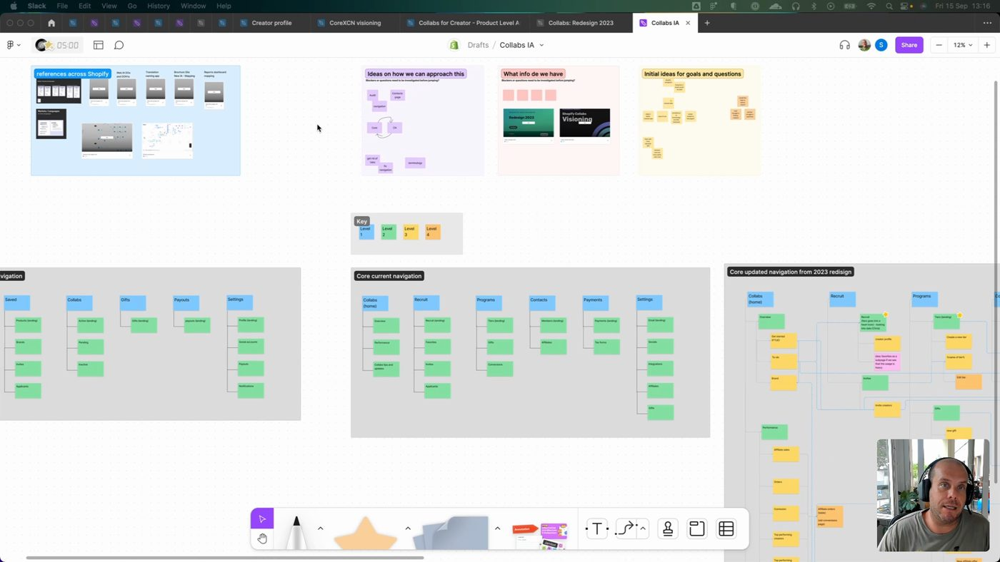
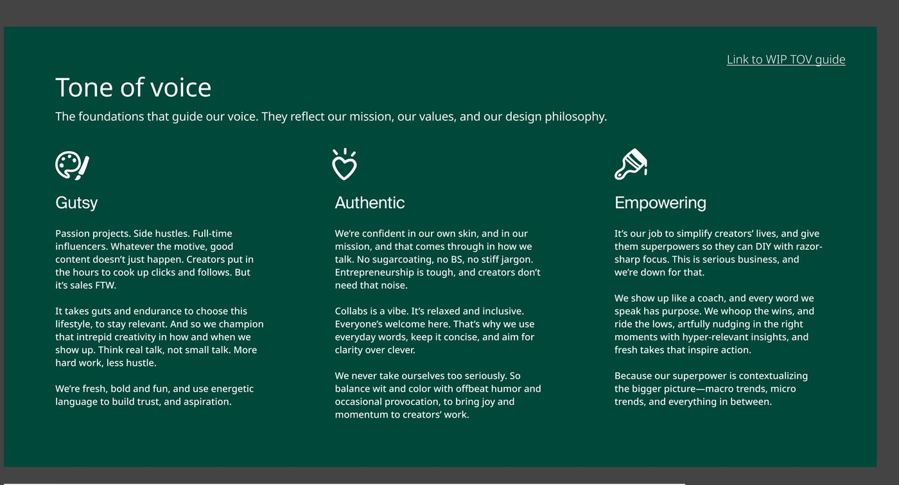
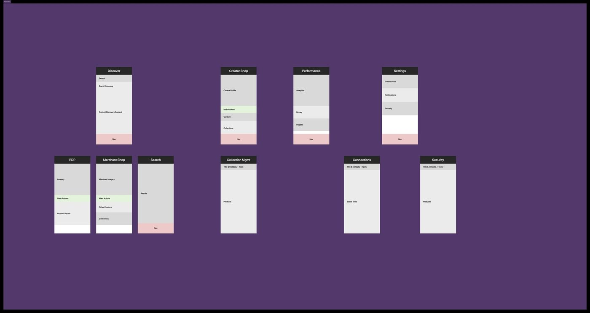
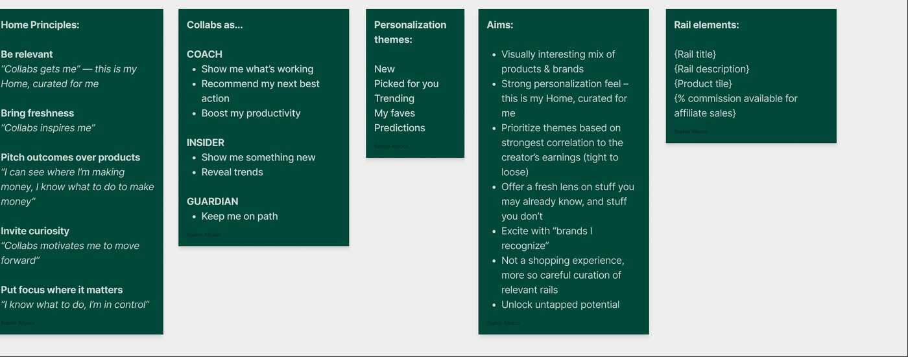
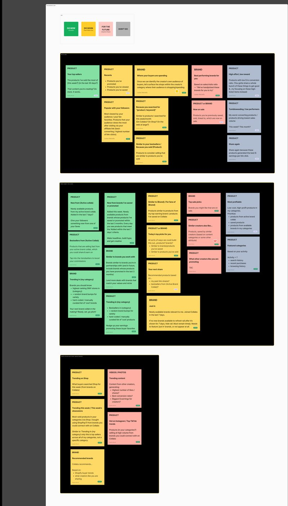
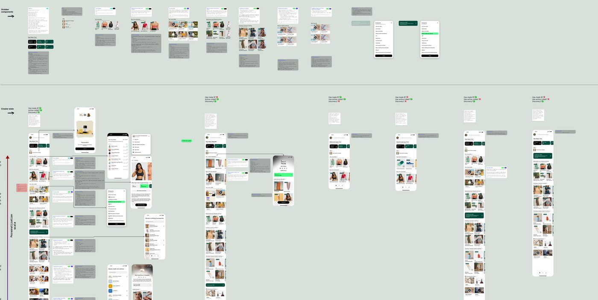
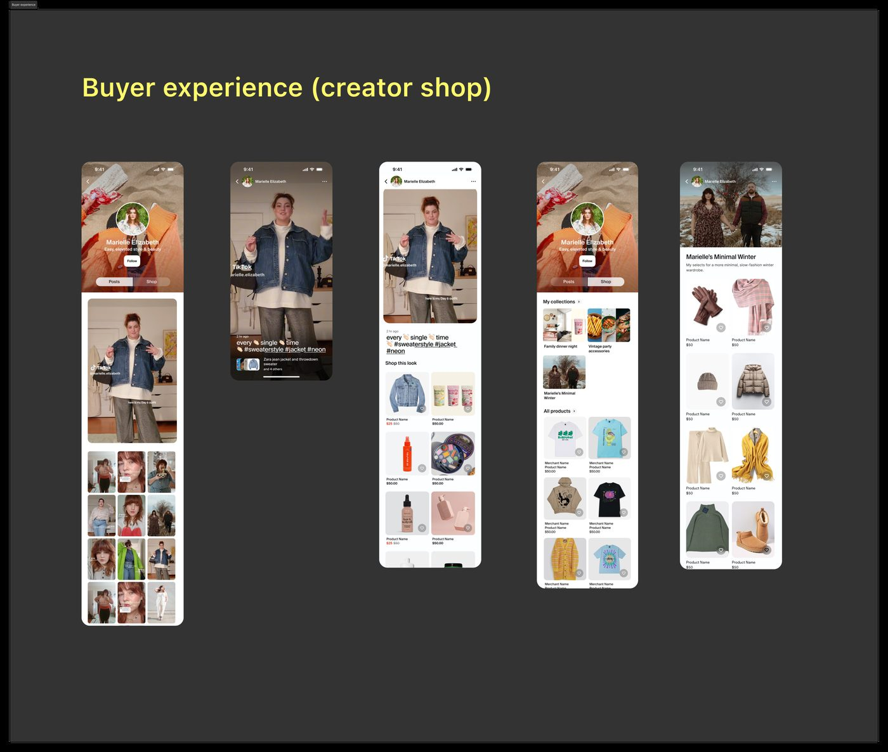
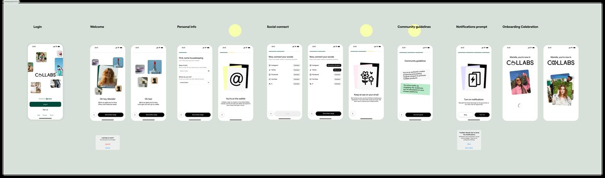
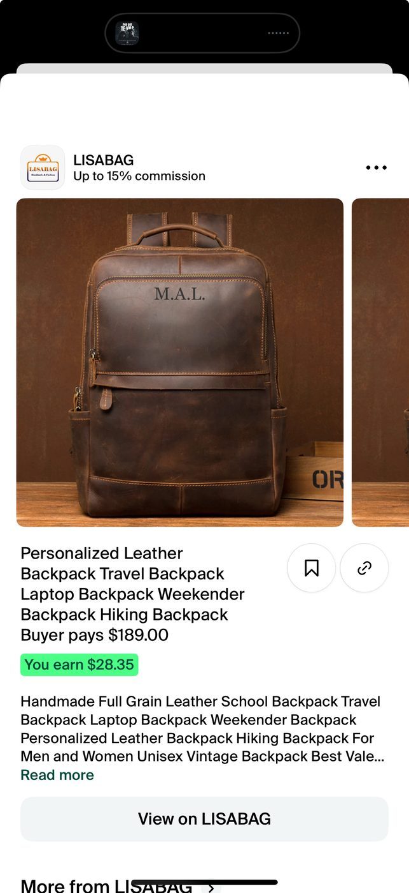

Collabs creator app
Rebuilding Shopify's creator-marketing product from a mobile web experience into a native app, and designing the merchant and creator sides as one connected system.
The problem
- Collabs, Shopify's creator-marketing product, existed only as a mobile web experience. The team was rebuilding it as a native app, codenamed Project Phoenix.
- It was not a single redesign. Two connected surfaces had to ship together: the merchant admin, where brands manage collabs, and the creator app, where creators discover products, track collabs, get paid, and run a shoppable storefront for their followers.
- Underneath, it was really an information-architecture problem. Two audiences, two surfaces, one shared taxonomy of products, categories, brands, and collab states, and the job was making it feel like one coherent system instead of two apps bolted together.
- How I knew it was real: working with our UX researcher, empathy mapping surfaced a live tension, creators wanted momentum and control ("do more of what works," "keep me on track") but also simplicity and automation. And the old navigation, five flat top-level tabs, plainly couldn't scale to hold both surfaces.
- The goal: one system that read as a single product to two different people, a merchant configuring a collab and a creator posting and getting paid, without either side feeling like an afterthought.


From here, you'll need a password
The full walkthrough, the screens, the numbers, and what I learned are behind a password. Reach out and I'll send it over.
That's not it, try again. Ask me for the password
The work
- Set the tone-of-voice foundations first. Three pillars, Gutsy, Authentic, Empowering, each grounded in a specific creator insight ("Collabs is a vibe... clarity over clever"), not abstract adjectives. This became the north star for every screen that followed.

- Built the taxonomy and IA that tie admin and app together. Mapped the full screen inventory as a system, Discover, Creator Shop, Performance, Settings up top, with PDP, Merchant Shop, Search, Collections, Connections, and Security beneath, so the same product and collab-state model could drive both what a merchant configures and what a creator sees.

- Designed the Home feed around three real creator personas. Coach, Insider, and Guardian, each with a distinct need ("show me what's working" / "show me something new" / "keep me on path"), mapped along a spectrum from your active collab out to discovery. Home's design principles were written as paired rules and creator-voice quotes.

- Turned the personalization concept into a prioritized, voice-complete backlog. Every rail idea (Your top sellers, Trending in {my category}, New from {Active Collab}) got a plain-language rationale, an actual shipped-voice tagline ("Tap into the trendsetters to boost your commissions"), and a Do Now / Do Soon / Later / Don't triage. Voice applied line by line, not a moodboard.

- Spec'd each Home rail as a reusable component with conditional logic, not a one-off screen. "IF creator has an active brand collab, show the hero product card... ELSE fallback," written right alongside the visual so engineering could build the branching without a separate spec.

- Designed the buyer-facing side of the same system: a shoppable creator storefront (a TikTok-style feed to "Shop this look" to curated collections like "Marielle's Minimal Winter") so a creator's own audience could shop straight from their content. This is the content-commerce half, the other side of the same taxonomy. We deliberately designed these screens with a diverse cast of creators, so the product's tone was set by the real range of people who use it.

- Wrote and structured the full onboarding flow: login, welcome, personal info, social connection, community guidelines, notifications, celebration, plus edge states like the waitlist screen and a "Leaving so soon?" exit-intent. I added a skip option on social connection specifically to cut drop-off.

- Pressure-tested the taxonomy in cross-functional decision reviews, on the file. Real questions resolved in place: do we favorite or save or follow a brand (favorite), where do favorite brands live, Home or Library (Library, per Harriet, our PM), are brand values clickable (no). Designed with product and design leadership, not in isolation.
- Carried Gravity across products. Ahead of the build, I stress-tested an experimental Figma UI kit (a teammate had repurposed Gravity's components) by translating the existing web creator experience into it, to validate it as a foundation for the engineer building the native app. The systems thinking wasn't siloed per product, it traveled.
The results
4.8★
App Store rating, live today
70 → 72%
Onboarding completion, legacy vs. new funnel
~10 → ~3%
Drop-off on social connection after adding a skip
- Live product, positive reception. "Collabs: Content commerce" is on the App Store and Google Play today at 4.8 stars across 298 ratings. Unsolicited from the reviews: "Keeps me up to date with every sale that's made," and "so user friendly... we've had the best experience with it."
- The skip option was the single biggest win. Adding a skip on social-account connection cut that step's drop-off from ~10% to ~3%, and 15% of the people who skipped came back and connected later anyway.
- Documented decisions traced straight to what's live. The "favorite brands live in Library, not Home" call shipped exactly there. The Coach / Insider / Guardian spectrum shows up as a live "Curate your feed" picker. The taxonomy's Performance and Commissions sections are the app's real tabs, with commission math on every product page.

- The merchant-admin half shipped too. Shopify's Editions Winter '24 page lists seven live Collabs features: creator search and filters, automatic commission payouts, consolidated creator profiles, bulk application management, a unified connections table, per-segment affiliate offers, and TikTok Shop sync.

The takeaways
- The information architecture was the real test, and it demanded systems thinking, not screen-by-screen writing. Everything was interconnected, so holding the whole shared taxonomy in my head at once mattered more than any single screen. Leaning on that systems view is what kept two surfaces reading as one product, and it's the muscle this project pushed furthest for me.
- The values-step drop-off taught me something about how "optional" reads to people. Creators treated it as a "maybe later" step, and a good chunk never came back. If I had more time, I'd make its value clearer in the moment or rethink where it sits in the flow.
- Working across both surfaces let me see the full loop, the merchant managing a collab and the creator posting and getting paid. Very few projects let you sit with both halves of a relationship at once, and it changed how I thought about the taxonomy: a decision that looked small on the admin side could become real friction on the creator side.
There's always more behind a case study.